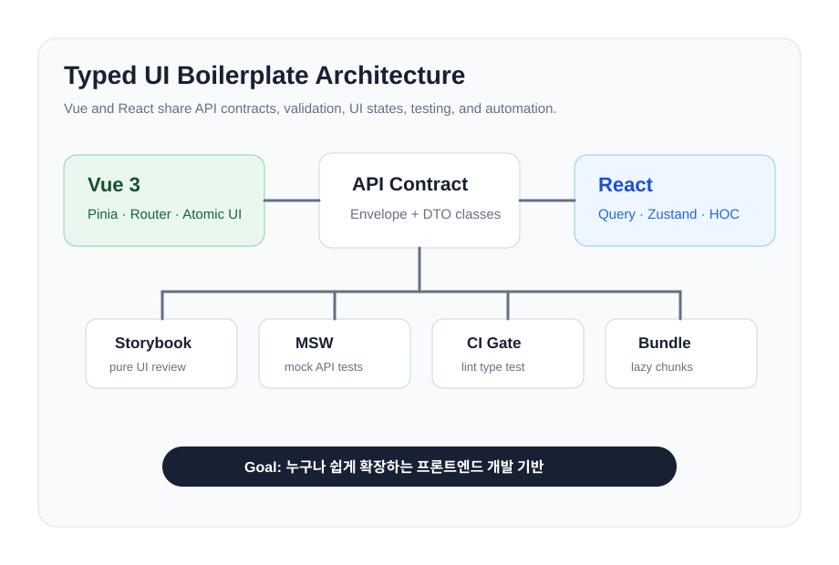
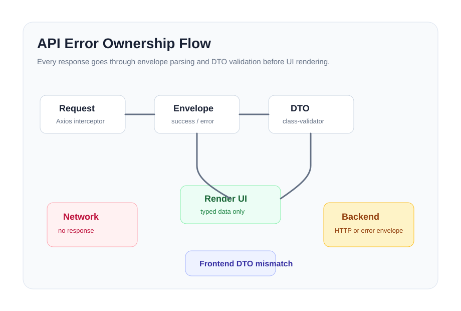

Pinia, Vue Router, Atomic UI, Storybook, DTO 검증
사례 연구
Vue, React, Next.js를 아우르는 확장 가능한 프론트엔드 보일러플레이트 설계
런타임 API 안정성, UI와 로직 분리, Storybook 기반 UI 문서화, 프레임워크별 상태 소유권을 중심으로 정리한 프론트엔드 아키텍처 프로젝트입니다. React 보일러플레이트에는 같은 계약을 그대로 만족하는 NestJS 백엔드를 붙여, mock이 정의하던 경계를 실제 PostgreSQL 위에서 검증했습니다.
배포된 애플리케이션
컴포넌트 카탈로그
무료 인스턴스라 15분간 요청이 없으면 내려갑니다. 첫 접속은 1분 정도 걸릴 수 있습니다.
TanStack Query, Zustand, HOC, MSW, View/Container 구조
Server Components, Server Actions, 쿠키 세션, hydration-safe 날짜 처리
서버 우선 상태 소유권
Prisma, PostgreSQL, Argon2id 인증, 회전 리프레시 토큰, WebSocket 게이트웨이 2종
프론트엔드 계약을 서버가 만족
요약
프로젝트 개요
목표는 단일 화면을 만드는 것이 아니라, 반복되는 초기 설정 비용을 줄이고 성장하는 프론트엔드 애플리케이션에 예측 가능한 개발 규칙을 세우는 것이었습니다.
런타임 API 안정성
TypeScript만으로는 실제 API payload를 검증할 수 없어 API 경계에 DTO 검증을 추가했습니다.
UI와 로직 분리
React는 View/Container/HOC, Vue는 composable/store, Next.js는 server/client 소유권 분리를 적용했습니다.
Hydration과 상태 소유권
Next.js 상태를 server data, client cache, UI state, URL state, mutation 기준으로 분리했습니다.
아키텍처
공통 설계 원칙
각 보일러플레이트는 프레임워크 런타임의 차이를 존중하면서도 같은 품질 기준을 따릅니다. API 계약, 상태 소유권, UI 상태, 테스트, 문서화를 모두 아키텍처의 일부로 다뤘습니다.
- UI 렌더링 전에 API envelope와 DTO 클래스를 검증
- 실패 원인을 프론트 계약, 백엔드, 네트워크, 인증 문제로 분류
- 로딩, 빈 상태, 오류 상태를 재사용 가능한 UI로 유지
- lazy route boundary와 scoped import를 우선 적용
- 순수 UI는 Storybook으로 문서화하고 계약은 테스트로 검증

React 확장 구현
Dashboard Builder, Realtime Topology, Live Experience
React 보일러플레이트의 경계를 실제 상호작용이 많은 화면에 적용했습니다. 완성된 기능과 실험 단계의 기능을 구분하고, 현재 저장소에서 직접 확인할 수 있는 범위만 정리했습니다.
Dashboard Builder
12열 그리드에서 위젯 추가, 이동, 크기 변경, 설정, 저장/취소, undo/redo, JSON import/export를 처리합니다.
- KPI, chart, table을 registry 기반 plugin으로 렌더링
- 전역·로컬·위젯 간 필터와 refresh event 분리
- 데이터 소스 registry, 권한, 개인화 preset, 성능 debug 제공
customizable-dashboard
Visual Graph / Topology
정적 graph 문서와 실시간 runtime 상태를 분리해 노드 상태, metric, stale 여부를 갱신합니다.
- batch 적용, 중복·stale event 무시, unknown entity 진단
- 상태별 필터, 선택 노드 이력, reconnect·resync 흐름
- mock transport와 runtime store/controller 단위 테스트
visual-graph/realtime
Live Streaming + Realtime Chat
브라우저 video 상태와 실시간 채팅을 다루는 화면입니다. 채팅은 실제 WebSocket 게이트웨이에 연결됩니다.
- 전송은 HTTP, 수신은 소켓 — 권한·멱등성·rate limit 구현을 한 곳에만 둡니다
- 순서 정렬, 중복 제거, 보존 한도, 배치 flush는 store가 소유
- 재연결 시 마지막 sequence부터 catch-up
HLS와 QoE 관측성, 부하 기준선 측정은 아직 범위에 포함하지 않았습니다.
live-experience
풀스택 확장
mock이 정의하던 계약을 실제 서버로 옮기다
React 보일러플레이트는 MSW mock 위에서 동작하고 있었습니다. 그 mock이 서술하던 계약을 NestJS + Prisma + PostgreSQL로 구현하되, 프론트엔드 코드는 바꾸지 않는 것을 조건으로 삼았습니다. 서버가 프론트에 맞추는 방향이어야 계약이 실제로 지켜지는지 확인할 수 있기 때문입니다.
백엔드는 별도 저장소이고 세 프론트가 모두 함께 씁니다. 프론트마다 서버를 두는 대신 하나의 백엔드에 여러 프레임워크를 붙이는 구조입니다. 같은 계약을 세 가지 방식으로 만족시키는 셈이라, 프레임워크의 차이가 어디에서 실제로 드러나는지가 그대로 보입니다.
세션을 훔치기 어렵게
Argon2id 해시와 회전 리프레시 토큰을 씁니다. 이미 사용된 토큰이 다시 제시되면 재사용으로 판단합니다.
- 재사용 감지 시 해당 세션 패밀리 전체 폐기
- 존재하지 않는 계정도 실제 해시 연산을 수행해 응답 시간을 균일화
- 리프레시 토큰은 SHA-256으로 저장하고 응답 본문에 넣지 않음
auth/session
동시 수정과 스키마 없는 JSON
대시보드 레이아웃은 낙관적 잠금으로, 개인화 JSON은 버전을 붙여 다룹니다.
- version 불일치 시 조용한 덮어쓰기 대신 409로 거부
- JSON은 쓸 때와 읽을 때 양쪽에서 검증 — 이미 저장된 잘못된 데이터도 화면에 닿지 않음
- 그래프의 구조 버전과 런타임 sequence를 별도 카운터로 분리
optimistic locking
WebSocket 게이트웨이 2종
토폴로지 이벤트와 라이브 채팅을 각각의 게이트웨이로 제공합니다.
- 핸드셰이크 시 토큰 검증 — 실패하면 4401로 즉시 종료
- 느린 소비자는 큐를 키우지 않고 연결을 끊음
- 재연결 시 마지막 sequence부터 replay, 보존 범위를 벗어나면 resync 지시
topology / live chat
스펙이 코드보다 뒤처지지 않게
OpenAPI 32개 경로를 코드에서 생성하고, 저장소의 스펙과 다르면 CI가 실패합니다.
- 봉투 형식과 오류 코드를 프론트/서버가 공유
- 프론트의 소비자 계약 테스트가 스펙을 직접 검사
- 테이블 15개, 마이그레이션 5개는 CI의 실제 PostgreSQL에 적용해 확인
openapi drift check
검증
게이트가 전부 초록인 동안, 앱은 네 군데가 망가져 있었습니다
테스트, 타입체크, 빌드, 번들 예산, e2e가 모두 통과한 상태였습니다. 실제 PostgreSQL에 연결해 브라우저에서 직접 눌러보기 전까지는 네 가지 모두 드러나지 않았습니다. 이 절은 무엇을 만들었는지가 아니라, 무엇을 놓쳤고 그 게이트를 어떻게 고쳤는지에 대한 기록입니다.
아무도 구현하지 않은 엔드포인트
대시보드는 계속 사용자 목록을 요청하고 있었고, 서버에는 그 라우트가 없었습니다.
- 계약 테스트가 구현된 엔드포인트만 손으로 나열해, 자기 자신과만 일치
- 이제 프론트 소스에서 호출 URL을 추출해 스펙과 대조
- 스펙에서 해당 경로를 지워 실제로 실패하는지 확인 후 복원
404 on /api/users
서버 모드가 실시간 기능에 닿지 않음
데이터 소스 스위치를 서버로 두어도 채팅과 토폴로지는 계속 mock이었고, 화면에는 "Connected"라고 표시됐습니다.
- 서버 트랜스포트 2종이 만들어지고 단위 테스트까지 됐지만 어디에서도 import되지 않음
- 배선 지점이 mock 구현을 하드코딩
- 스위치가 실제로 선택하도록 고치고, 어댑터로 기존 store·컨트롤러는 그대로 유지
VITE_DATA_MODE
토큰 갱신이 배선되지 않음
세션이 액세스 토큰 수명에 맞춰 조용히 끝났습니다. 단일 비행 갱신 로직은 있었지만 호출되지 않았습니다.
- 401에 한 번만 갱신하고 한 번만 재시도하도록 연결
- 동시 401 4건에서 갱신 요청이 정확히 1회 발생하는 것을 브라우저에서 확인
- 회전 토큰에서 병렬 갱신은 재사용으로 읽혀 세션 전체가 폐기됨
refresh single flight
성공을 보고하지만 실행하지 않는 CI 단계
CI의 시드 단계가 필수 환경변수 부재로 초반에 반환하면서, 대부분의 코드를 건드리지 않은 채 통과했습니다.
- 시드 전체가 실행되도록 환경변수를 지정
- 두 번 연속 실행해 재실행 안전성까지 확인
- 컨테이너 스모크 테스트에 "클라이언트를 서빙하는가"를 추가
seed coverage
확장 계획 1 · 완료
같은 이름이 저장소마다 다른 값을 가리키고 있었습니다
세 보일러플레이트가 "공통 디자인 시스템"을 표방했지만, 실제로는 세 벌의 팔레트가 각자 표류하고 있었습니다. 값을 한 번 맞추는 것으로는 다시 갈라집니다. 그래서 단일 소스에서 생성하고, 어긋나면 실패하는 검사를 붙였습니다.
조용히 갈라진 세 개의 색
--color-line, --color-success, --color-surface가 react와 next에서 다른 값이었습니다.
- 차이가 미세해서 아무도 눈치채지 못한 채 벌어졌습니다
- next에는 react에 없는 토큰 5개가 더 있었습니다
- vue는
--ds-계층을 따로 두고 다크 테마까지 갖고 있었습니다
TOKEN_INVENTORY.md
이름은 같고 크기는 다른 스케일
더 위험한 쪽이었습니다. --radius-md는 8px, --ds-radius-md는 6px입니다.
- vue의 반경 스케일이 정확히 한 칸씩 밀려 있었습니다
- px와 rem이라 문자열 비교로는 "서로 다른 토큰"으로 보입니다
- 이름만 보고 합쳤다면 한쪽 모서리가 조용히 바뀌었을 것입니다
merge 하지 않음
값이 같다고 묶지 않았습니다
ds.radius.sm과 ds.spacing.1은 둘 다 0.25rem이지만 서로 다른 결정입니다.
- 묶었다면 간격을 바꿀 때 모서리가 따라 움직입니다
- 역할이 같은 색 4개만 원시값으로 공유했습니다
- 나머지 우연의 일치는 이유와 함께 리터럴로 남겼습니다
83 tokens
생성하지 않고 비교합니다
vue의 기존 파이프라인은 CI에서 생성기를 실행했습니다. 손으로 고친 파일이 덮어써질 뿐 실패하지 않습니다.
- 이제 렌더링해서 커밋된 파일과 비교하고, 다르면 파일·줄·양쪽 값을 출력합니다
- 한 글자를 고쳐 실패하는 것을 확인한 뒤 되돌려 통과시켰습니다
- 세 저장소 모두
check:ci에 포함됩니다
check:tokens
react는 값이 하나도 바뀌지 않았고(추가 5개, 변경 0), next는 의도한 세 색만 바뀌었으며, vue는 생성물이 이전과 바이트 단위로 동일합니다. 소스를 바꿨는데 화면은 그대로라는 것이 이 작업이 회귀 없이 끝났다는 증거입니다.
확장 계획 2 · 완료
생성기가 만든 화면을 라우터가 볼 수 없었습니다
세 저장소 모두 생성기를 갖고 있었습니다. 문제는 생성물이 저장소 자신의 관례를 어긴다는 것, 그리고 그것을 검사해야 할 게이트가 생성기 파일이 존재하는지만 보고 있었다는 것입니다. 한 번도 실행해보지 않는 검사였습니다.
열 수 없는 기능
react의 라우터는 routes/*.route.tsx를 수집하는데, 생성기는 그 디렉터리를 만들지도 않았습니다.
- next는 더 심했습니다 — 라우팅이 파일 시스템인데
page.tsx를 만들지 않았습니다 - 빈 디렉터리를 남겨 따르지 않은 관례를 광고했습니다
- story도 test도 만들지 않아, 쓸수록 관례에서 멀어졌습니다
routes / page.tsx
저장소마다 관례가 달랐습니다
react의 계약을 그대로 옮기면 틀립니다. 여섯·일곱·여덟 기능을 각각 조사해 따로 문서화했습니다.
- 라우트 파일: react 6개 중 3개, vue 7개 전부, next는 아예 다른 트리
- story: react 6개 전부, vue는 7개 중 1개
- vue의 생성기는 이미 앞서 있었고, 없던 건 검증뿐이었습니다
FEATURE_CONTRACT.md ×3
스캐폴딩이 CI를 빨갛게 만들면 안 됩니다
생성된 api 모듈이 없는 엔드포인트를 호출하니 계약 테스트가 즉시 실패했습니다.
- 맞는 실패지만, 코드 한 줄 쓰기 전에 겪으면 검사를 무시하게 됩니다
--api플래그로 옮겨 명시적 선택으로 만들었습니다- 계약 테스트가 없는 vue는 기본으로 두고, 그 차이를 문서에 적었습니다
--api
파일을 세지 않고 실행합니다
고치기 전에 게이트를 먼저 만들어 실패시켰습니다. 누락 5개와 빈 디렉터리 2개를 지목했습니다.
- 덮어쓰기 거부와 경로 탈출 거부까지 검사합니다
- vue는 라우터의 글롭 패턴을 읽어와 생성 경로와 대조합니다
- next는 생성된 뷰가 서버 컴포넌트인지 검사합니다
check:generators
문서를 쓰다 두 저장소의 generate.ts에 옛 인라인 분기가 남아 있는 것을 발견했습니다.
README가 안내하는 generate -- feature가 고장난 옛 경로를 쓰고 있었던 셈입니다.
위임하도록 고치고, 게이트가 진입점의 위임 여부까지 확인하게 했습니다.
세 프레임워크, 하나의 계약
같은 백엔드에 붙이자 프레임워크의 차이가 드러났습니다
세 프론트가 하나의 서버를 쓰는 순간, 추상적으로 이야기되던 차이가 구체적인 설계 결정으로 바뀌었습니다. 토큰을 어디에 두는지, 무엇이 프록시할 수 있고 무엇이 못 하는지가 저장소마다 다르게 결론 났습니다.
토큰을 어디에 두는가
React와 Vue는 로컬 스토리지에 두고 직접 헤더를 붙입니다. 자기 서버가 없기 때문입니다.
- Next.js는 서버가 있으므로 HttpOnly 쿠키에 두고 서버측에서 붙입니다
- 페이지 스크립트가 토큰을 쥐지 않으니 훔칠 것이 없습니다
- 클라이언트가 보낸
Authorization헤더는 무시합니다 — 받으면 뒷문이 됩니다
httpOnly cookie
프록시할 수 없는 것
Next의 라우트 핸들러는 HTTP 업그레이드를 중계하지 못합니다. WebSocket만 rewrites로 넘깁니다.
- 짓기 전에 먼저 실증했습니다 — 직접 연결과 rewrite가 같은 프레임을 받는지
- 그러자 인증이 막혔습니다. 쿠키에 있는 토큰을 URL에 넣을 수 없습니다
- 게이트웨이가 쿠키를 읽도록 고치고, Origin 검사를 같은 커밋에 넣었습니다
CSWSH
회복 코드가 스스로를 망가뜨렸습니다
토폴로지 소켓이 초당 한 번씩 재연결하고 있었습니다. 프레임을 찍어보니 원인이 분명했습니다.
- resync를 받으면 시퀀스를 0으로 되돌리고 재연결하도록 썼습니다
- 그런데 0에서 구독하는 것이 애초에 resync를 유발한 조건입니다
- 회복하려던 상태를 그대로 재생산했고, 세 저장소에 같은 코드가 들어가 있었습니다
behind-retention
양방향 계약 검사
Next는 브라우저가 자기 라우트 핸들러를 부르므로, 틀릴 수 있는 방향이 둘입니다.
- 핸들러가 전달하는 경로가 백엔드에 없거나
- 클라이언트가 부르는 경로를 이 앱이 답하지 않거나 — 이쪽이 숨습니다
- 첫 실행에서 후자를 하나 찾았습니다. 백엔드에 닿기도 전에 404였습니다
check:contract
Vue를 붙일 때는 계약 불일치가 다섯 개 나왔고, 그중 가장 큰 것은 DTO가 아니라 응답 봉투 자체였습니다.
Vue는 { status: "SUCCESS" }를, 서버는 { success: true }를 씁니다.
status 필드가 없으니 어떤 응답도 검증을 통과할 수 없는 상태였습니다.
배포
쿠키 속성 하나가 배포 형태를 결정했습니다
리프레시 토큰은 sameSite: lax 쿠키입니다. 프론트와 API를 서로 다른 호스트에 두면 브라우저가
이 쿠키를 보내지 않습니다. 로그인은 성공하고, 액세스 토큰이 만료되는 순간 세션이 이유 없이 끝납니다.
WebSocket 두 개도 같은 지점에서 깨집니다. 세 프론트가 한 백엔드를 공유하므로 어느 하나에 서버를 묶을 수
없었고, 각 프론트가 /api를 백엔드로 프록시하는 형태로 정리했습니다.
브라우저는 언제나 하나의 오리진만 봅니다.
서비스 네 개
백엔드 하나와 프론트 셋. 각 저장소의 render.yaml이 자기 서비스를 기술하므로, 설정이 대시보드에서 조용히 바뀌지 않습니다.
render.yaml
프레임워크별 프록시
React와 Vue는 Caddy 리버스 프록시, Next는 라우트 핸들러입니다. WebSocket만은 Next의 핸들러가 중계하지 못해 rewrites로 넘깁니다.
BACKEND_ORIGIN / BACKEND_URL
부팅 시 거부
프로덕션에서 쿠키 보안 설정이 꺼져 있으면 서버가 시작을 거부합니다. 평문 전송이 조용히 일어나지 않습니다.
COOKIE_SECURE
순서가 있는 배포
프론트는 백엔드 URL이, 백엔드는 프론트 오리진이 필요합니다. CORS_ORIGINS는 CORS만이 아니라 인증된 소켓의 교차 사이트 연결을 막는 유일한 장치입니다.
4401
배포가 드러낸 것
초록 게이트가 증명하지 못한 두 가지
모든 게이트가 통과한 상태에서 배포했고, 두 개가 바로 걸렸습니다. 둘 다 배포하기 전에는 드러날 수 없는 종류였습니다. 하나는 CI가 프로덕션보다 느슨한 조건으로 검사하고 있었고, 다른 하나는 실패를 만들지 않고 15분 뒤에야 결과가 나타나는 것이었습니다.
컨테이너가 시작조차 못 했습니다
배포 로그에 한 줄만 남았습니다. exec /usr/bin/caddy: operation not permitted
- Caddy 베이스 이미지는 80번 포트를 열려고 바이너리에 파일 capability를 겁니다
- 플랫폼은 컨테이너를
no-new-privileges로 띄웁니다. 그 상태에서 capability가 붙은 파일의execve()는 EPERM입니다 - CI는 이 플래그 없이 컨테이너를 띄우고 있었습니다 — 프로덕션보다 느슨한 조건의 스모크 테스트는 스모크 테스트가 아닙니다
- 바이너리를 복사해 capability를 떨어뜨렸고, CI도 같은 플래그를 넘기게 했습니다
no-new-privileges
리프레시 쿠키가 사라졌습니다
Next를 거친 로그인 응답에는 rb_access만 있고, 백엔드를 직접 부르면 rb_refresh가 있었습니다.
- 프록시는
getSetCookie()로 제대로 붙입니다. 그 뒤 라우트가cookies.set()을 부르며 헤더 전체를 다시 만듭니다 - 기존 헤더를 쉼표로 이어붙인 한 덩어리로 읽는 그 손상이, 한 층 위에서 일어나고 있었습니다
- 아무것도 실패하지 않습니다. 로그인은 200이고, 15분 뒤 조용히 로그아웃됩니다
- 리프레시 경로에서는 더 나쁩니다 — 회전된 토큰을 버리면 옛 토큰 재사용이 replay로 간주되어 패밀리가 폐기됩니다
rb_refresh
둘 다 게이트를 고쳐서 닫았습니다
고친 코드가 통과하는 것으로는 부족합니다. 게이트가 옛 코드를 잡는지를 확인했습니다.
- 쿠키 동작에 대한 테스트가 하나도 없었습니다. 네 개를 새로 썼고, 옛 구현에서 세 개가 실패합니다
- 도커 스모크 테스트는 이제 프로덕션과 같은 보안 플래그로 컨테이너를 띄웁니다
- 이 세션에서 닫은 다른 게이트들과 같은 방식입니다 — 일부러 깨뜨려 실패를 본 뒤 되돌립니다
회귀 테스트
구현
프레임워크별 전략
Vue 3
- 상태
- Pinia
- 라우팅
- Vue Router lazy route
- UI
- Atomic components + Storybook
- 목적
- 템플릿 기반의 빠른 화면 구성
React
- 서버 상태
- TanStack Query
- 클라이언트 상태
- Zustand
- 구조
- View, Container, hook, HOC
- 목적
- 테스트 가능한 UI/로직 분리
Next.js
- 초기 데이터
- Server Component
- 클라이언트 갱신
- TanStack Query
- UI 상태
- Zustand
- 변경 작업
- Server Action

API 안정성
타입 기반 API와 오류 소유권
API 응답은 envelope 파싱과 DTO 검증을 거칩니다. DTO 불일치는 프론트엔드 계약 문제로 보고, HTTP 실패는 백엔드 또는 네트워크 문제로 분류했습니다.
{
"success": true,
"data": {
"id": "u-1",
"email": "demo@example.com"
}
}Next.js 확장 사례
운영형 프론트엔드 콘솔
Next.js 보일러플레이트를 시니어 프론트엔드 역할에 맞는 증거 화면으로 확장했습니다. B2B 운영 콘솔 안에 런타임 DTO 검증, i18n, 클라이언트 실시간 업데이트, 릴리즈 모니터링, 디자인 시스템 재사용 경험을 함께 담았습니다.
파트너 전환율34.8%good
API 지연시간 p95184mswatch
프론트 오류율0.18%good
LCP1.9sgood
실시간 모니터WebSocket 연결이 재시도 후 정상 복구되었습니다.
릴리즈 파이프라인프로덕션 배포가 CI 상태와 함께 검증되었습니다.
서버 계약 검증
UI 렌더링 전에 class-validator DTO로 API envelope를 검증합니다.
OpsConsole.dto.tsi18n
타입이 잡힌 dictionary와 클라이언트 상태로 KO/EN 전환을 처리합니다.
opsDictionary실시간 UI
서버에서 검증한 초기 데이터 위에 클라이언트 실시간 이벤트 피드를 얹었습니다.
LiveIncidentFeed운영 관점
Core Web Vitals, 오류율, 지연시간, 릴리즈 상태를 운영 지표로 노출합니다.
/ops-console제품 MVP
WOD Planner
CrossFit WOD와 HYROX 운동을 날짜별로 저장하고, 출석, 개인 기록, 통증 상태, 부위별 피로도를 함께 관리하는 개인 운동 플래닝 앱입니다. 단순 기록장을 넘어 다음 운동의 보조 운동 추천까지 이어지도록 설계했습니다.
오늘 WOD
기록 경쟁 WOD
400m 러닝 · 월볼 20회 · 버피 15회
부위별 피로
대퇴사두
어깨
허리
추천
상체 보조 운동
하체 피로가 높아 오버헤드와 코어 중심 보조 운동을 우선 추천합니다.
WOD 파서
날짜, 섹션, 타임캡, 동작을 텍스트에서 추출하고 CrossFit/HYROX 타입을 구분합니다.
wodParser.ts피로도 계산
오늘/내일 WOD, 최근 운동, 통증 플래그를 합산해 부위별 피로 점수를 계산합니다.
fatigueScorer.ts운동 추천
하체, 후면사슬, 어깨 피로와 통증 상태를 바탕으로 피해야 할 동작과 추천 보조 운동을 제안합니다.
workoutRecommender.ts기록 관리
출석 체크, WOD 결과, 세트별 기록, PB, 동작 빈도, 능력치 요약을 브라우저 로컬 상태로 관리합니다.
localStorageAI 활용 프론트엔드 엔지니어링
AI는 초안 엔진으로 쓰고, 아키텍처 판단은 사람이 소유합니다
보일러플레이트 위에 AI 활용 워크플로우를 추가했습니다. 구현 초안은 AI에게 맡기되, 런타임 경계, API 계약, 상태 소유권, 성능, 접근성, 릴리즈 리스크 같은 시니어 프론트엔드 판단은 사람이 검토하고 결정하는 구조입니다.
프롬프트 계약
코드 생성 전에 목표, 범위, 제약, 검증 명령, 리뷰 관점을 먼저 정의합니다.
PROMPT_PLAYBOOK.md
AI 초안 생성
UI 초안, DTO/테스트 초안, 리팩토링 후보 탐색, E2E 시나리오 생성을 AI에게 맡깁니다.
AI_WORKFLOW.md
사람의 리뷰
Boundary 위치, 상태 소유권, API 계약, 접근성, 번들 영향을 사람이 검토합니다.
CODE_REVIEW_CHECKLIST.md
검증 게이트
자동화 검증이 통과해야만 AI가 만든 코드가 아키텍처에 맞는 것으로 인정합니다.
lint / typecheck / test / build / e2e
리팩토링 재현 사례
Before / After: AI가 만든 리팩토링을 사람이 통제하는 방식
의도적으로 복잡하게 만든 운영 테이블 컴포넌트를 사용해, AI 초안을 기반으로 경계가 명확하고 테스트 가능한 구조로 나누는 과정을 보여줍니다.
이전
LegacyOpsTable.client.tsx
- 검색 상태, 필터링, 라벨, 테이블 렌더링이 하나의 client 파일에 섞여 있음
- 비즈니스 라벨이 JSX 내부에 직접 박혀 있음
- 전체 컴포넌트를 렌더링하지 않으면 테스트하기 어려움
- 서버 데이터 구조로 옮기기 전에 client boundary가 불필요하게 큼
Client component
- 입력 상태
- 필터 로직
- 상태 라벨
- 테이블 마크업이후
OpsTable.client.tsx + OpsTableView
- client 컴포넌트는 검색어 상태만 소유
- 필터링과 상태 라벨 로직을 pure function으로 분리
- View 계층은 서버에서 검증된 row 데이터를 받을 수 있음
- 브라우저 렌더링 없이 로직 회귀 테스트 가능
Client component
- 로컬 검색 상태
Pure logic
- filterOpsRows()
- getStatusLabel()
View
- DataTable역할 분리 매트릭스
AI는 초안을 만들고, 사람은 제품 수준의 판단을 소유합니다
AI에게 맡기는 일
사람이 책임지는 일
컴포넌트 초안과 반복 UI variant 생성
Server/Client Component 경계와 hydration 리스크 판단
DTO, schema, 테스트 초안 작성
API 계약 형태와 하위 호환성 결정
리팩토링 후보 탐색과 기계적인 분리 작업
상태 소유권 결정: server, cache, URL, local, Zustand
Storybook 상태와 E2E 시나리오 초안 생성
접근성 기준, UX 수용 기준, 릴리즈 리스크 판단
검증 파이프라인
AI 결과물은 파이프라인을 통과하기 전까지 받아들이지 않습니다
npm run lint
npm run typecheck
npm run test
npm run build
npm run e2e
npm run check:automation프론트엔드 플랫폼
React, Vue, Next 보일러플레이트를 하나의 프론트엔드 플랫폼으로 정렬
세 개의 보일러플레이트를 단순 샘플 프로젝트가 아니라, 여러 앱과 공통 패키지가 같은 품질 기준을 공유하는 모노레포형 프론트엔드 플랫폼 사례로 재구성했습니다.
목표 모노레포 구조
frontend-platform
apps/
next-web
react-admin
vue-console
packages/
ui
contracts
config
testing
ai-workflowapps
Next, React, Vue 앱은 각 런타임 특성을 유지하되 동일한 품질 게이트를 공유합니다.
next / react / vue
packages/ui
공통 UI, 상태 컴포넌트, Storybook 문서화를 패키지 단위로 관리하는 구조를 가정합니다.
design system
packages/contracts
DTO, schema, API envelope, mock scenario를 앱과 분리해 계약 변경 영향을 줄입니다.
DTO / Zod / MSW
packages/ai-workflow
AI 프롬프트, 리뷰 체크리스트, check:ai 자동화를 공통 품질 기준으로 묶습니다.
check:ai
CI/CD 품질 게이트
프레임워크가 달라도 같은 검증 파이프라인을 통과해야 합니다
GitHub Actions와 npm script를 중심으로 품질 게이트를 구성했습니다. Jenkins를 쓰더라도 같은 npm script를 호출하면 동일한 검증 기준을 재사용할 수 있습니다.
lockfile 기반 의존성 설치
금지 패턴과 컨벤션 검사
strict TypeScript 검증
unit, DTO, a11y 테스트
AI 문서, PR 템플릿, 리뷰 기준 누락 검사
프로덕션 번들 생성
번들 예산과 dependency 크기 검사
공통 UI 문서 빌드
GitHub Actions / Jenkins
-> npm run check:ci
-> npm run check:ai
-> npm run check:bundle
-> npm run build-storybook핵심은 특정 CI 도구가 아니라, 품질 기준을 npm script로 고정해 GitHub Actions와 Jenkins 양쪽에서 같은 검증을 재사용할 수 있게 만드는 것입니다.
결과
검증된 산출물
프론트엔드와 백엔드가 각각의 게이트를 가지고, 둘 사이의 계약은 별도 잡이 검사합니다. 아래 수치는 현재 저장소에서 실행되는 값입니다.
CI 5개 잡
프론트엔드, 서버, 실제 PostgreSQL 통합, 계약, 컨테이너를 각각 분리해 검증합니다.
5 jobs green테스트 506개
프론트 171, 서버 단위 226, 서버 e2e 109. 이 밖에 Playwright 4개가 실제 브라우저를 띄웁니다.
171 / 226 / 109실제 데이터베이스
마이그레이션 5개를 호스팅 PostgreSQL에 적용하고, 통합 테스트는 CI의 컨테이너 DB에서 돌립니다.
15 tables계약 검사
OpenAPI 32경로를 코드에서 생성하고, 저장소 스펙과 어긋나면 실패합니다.
drift check컨테이너 검증
이미지를 빌드해 띄우고 liveness, 클라이언트 서빙, 딥링크, API 404를 확인합니다.
docker smokeStorybook · MSW
UI 컴포넌트 문서화와 mock 계약은 그대로 유지됩니다. 서버 모드에서는 mock이 번들에 포함되지 않습니다.
bundle budget기술 결정
핵심 결정
런타임 DTO 검증
UI가 데이터를 받기 전에 런타임에서 검증해 API 계약 drift를 줄였습니다.
Next.js 상태 소유권
초기 데이터는 server-first로 유지하고, TanStack Query는 인터랙티브 갱신에만 사용했습니다.
styled-components 제외
CSS Modules, SCSS Modules, CSS variables로 Server Components와 hydration을 단순하게 유지했습니다.
부록
프로젝트 구조
폴더 경계는 이후 AI 보조 개발에서도 구조를 쉽게 추론할 수 있도록 설계했습니다.
react-boilerplate
src/components
src/features
src/hoc
src/hooks
src/core
src/test/mswboilplate
src/components
src/stores
src/router
src/api
tests/performance
storybooknext-boilerplate
app
src/features/*/server
src/features/*/actions
src/components/client
src/hoc/server
src/stores다음 단계
확장 계획
디자인 토큰
세 저장소가 각자 토큰을 갖고 있었고 값이 갈라져 있었습니다. 이제 하나의
tokens.json에서 생성하며, 생성물을 손으로 고치면 CI가 실패합니다.
자세한 내용은 아래 사례를 보세요.
생성기
생성기가 만들어낸 기능을 라우터가 인식하지 못했습니다. 이제 세 저장소 모두 각자의 관례대로 생성하고, 게이트가 생성기를 실행해 결과를 검사합니다. 자세한 내용은 아래 사례를 보세요.
프로덕션 인증
demo session은 실제 서버 인증으로 교체되었습니다. Argon2id 해시, 회전 리프레시 토큰, 권한 guard가 동작합니다. 남은 범위는 외부 IdP 연동과 MFA이며, 백엔드 구현 시 의도적으로 제외한 부분입니다.
배포
네 개의 서비스가 프로덕션에서 돌고 있습니다. 세 프론트 모두 실제 브라우저에서 로그인하고,
채팅 소켓이 붙고, 밖에서 발행한 토폴로지 이벤트가 화면의 카운터를 바꾸는 것까지 확인했습니다.
프록시 뒤에서만 드러나는 것들 — TLS 종료, TRUST_PROXY, Secure 쿠키
발급 — 이 처음으로 검증되었습니다. 부하 측정은 여전히 없습니다.